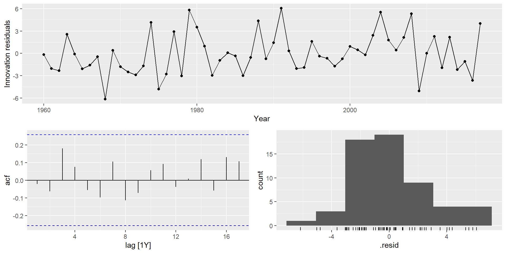
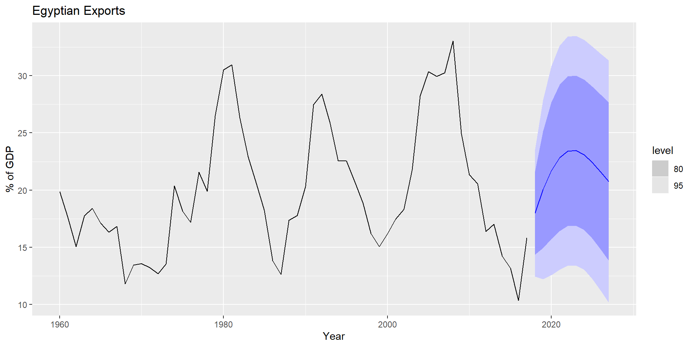

I: інтегрування (диференціювання для стаціонарності)
MA: ковазна середня (лагові помилки як вхідні дані)
Модель ARIMA рідко можна інтерпретувати з точки зору структур даних, таких як тренд і сезонність. Але вони можуть охопити величезне різноманіття шаблонів часових рядів.
Стаціонарність і диференціація
Стаціонарність
Визначення
Якщо \(\{y_t\}\) — стаціонарний часовий ряд, то для всіх \(s\) розподіл \((y_t,\dots,y_{t+s})\) не залежить від \(t\)
Стаціонарний ряд це:
приблизно горизонтальний ряд
постійна дисперсія
відсутність передбачуваних патернів у довгостроковій перспективі
Дуже широко використовується для нестаціонарних даних.
Це модель наївного методу.
Випадкові блукання зазвичай мають:
тривалі періоди тенденцій до зростання або зниження
Раптові/непередбачувані зміни напрямку
Прогноз дорівнює останньому спостереженню
майбутні рухи вгору або вниз однаково ймовірні.
Випадкове блукання з дріфтовою моделлю
Якщо різницевий ряд є білим шумом із ненульовим середнім:
\[y_t-y_{t-1}=c+\varepsilon_t\] або \[y_t=c+y_{t-1}+\varepsilon_t\]
де \(\varepsilon_t \sim NID(0,\sigma^2)\).
\(c\) — це середня зміна між послідовними спостереженнями.
Якщо \(c>0\), \(y_t\) буде тяжіти до підвищення і навпаки.
Це модель метод дрейфу.
Різниця другого порядку
Іноді перших різниць недостатньо для досягнення стаціонарності, в таких випадках може знадобитися різниця другого порядку (різниця різниць): \[y''_{t} = y'_{t} - y'_{t - 1} \\
= (y_t - y_{t-1}) - (y_{t-1}-y_{t-2})\\
= y_t - 2y_{t-1} +y_{t-2}.\]
\(y_t''\) матиме значення \(T-2\).
На практиці майже ніколи не потрібно виходити за межі різниць другого порядку.
Різниця другого порядку
Сезонна різниця – це різниця між спостереженням і відповідним спостереженням за попередній рік. \[
y'_t = y_t - y_{t-m}
\] де \(m=\) кількість сезонів.
немає різниці, що буде зроблено першим — результат буде той самий.
Якщо сезонність сильна, ми рекомендуємо спочатку виконати сезонну різницю, оскільки інколи результуючий ряд буде стаціонарним і не буде потреби в подальшій першій різниці.
Важливо, що ряд різниць можна інтерпретувати.
Інтерпретація різниць
перші різниці – це зміна між одним спостереженням і наступним;
сезонні різниці – це зміна одного року до наступного.
Але, наприклад, різниці із затримкою 3 для річних даних призводить до моделі, яку неможливо розумно інтерпретувати.
Перевірка одиничного кореня
Статистичні тести для визначення необхідного порядку різниці.
Розширений тест Дікі Фуллера: нульова гіпотеза полягає в тому, що дані є нестаціонарними та несезонними.
Тест Квятковського-Філліпса-Шмідта-Шина (KPSS): нульова гіпотеза полягає в тому, що дані стаціонарні та несезонні.
Інші тести, доступні для сезонних даних.
KPSS тест
google_2018 %>%features(Close, unitroot_kpss)
# A tibble: 1 × 3
Symbol kpss_stat kpss_pvalue
<chr> <dbl> <dbl>
1 GOOG 0.573 0.0252
google_2018 %>%features(Close, unitroot_ndiffs)
# A tibble: 1 × 2
Symbol ndiffs
<chr> <int>
1 GOOG 1
Автоматичний вибір порядку різниць
STL декомпозиція : \(y_t = T_t+S_t+R_t\)
Сила сезонності \(F_s = \max\big(0, 1-\frac{\text{Var}(R_t)}{\text{Var}(S_t+R_t)}\big)\)
Якщо \(F_s > 0,64\), виконайте одну сезонну різницю.
\[
y_{t} = c + \phi_{1}y_{t - 1} + \phi_{2}y_{t - 2} + \cdots + \phi_{p}y_{t - p} + \varepsilon_{t},
\] де \(\varepsilon_t\) — білий шум. Це множинна регресія з лаговими значеннями\(y_t\) в якості предикторів.
\[
y_t = 2.56
+ 1.68 y_{t-1}
-0.80 y_{t-2}
-0.69 \varepsilon_{t-1}
+ \varepsilon_{t},
\] де \(\varepsilon_t\) це білий шум зі стандартним відхиленням \(2.837 = \sqrt{8.046}\).
Експорт Єгипету
gg_tsresiduals(fit)

Експорт Єгипету
augment(fit) %>%features(.innov, ljung_box, lag =10, dof =4)
# A tibble: 1 × 4
Country .model lb_stat lb_pvalue
<fct> <chr> <dbl> <dbl>
1 Egypt, Arab Rep. ARIMA(Exports) 5.78 0.448
Експорт Єгипету
fit %>%forecast(h=10) %>%autoplot(global_economy) +labs(y ="% of GDP", title ="Egyptian Exports")

Розуміння моделей ARIMA
Якщо \(c=0\) і \(d=0\), довгострокові прогнози будуть нульовими.
Якщо \(c=0\) і \(d=1\), довгострокові прогнози переходитимуть до ненульової константи.
Якщо \(c=0\) і \(d=2\), довгострокові прогнози будуть прямувати.
Якщо \(c\ne0\) і \(d=0\), довгострокові прогнози стосуватимуться середнього значення даних.
Якщо \(c\ne0\) і \(d=1\), довгострокові прогнози будуть прямувати.
Якщо \(c\ne0\) і \(d=2\), довгострокові прогнози будуть слідувати квадратичному тренду.
Оцінка та вибір порядку
Оцінка максимальної правдоподібності (MLE)
Визначивши порядок моделі, потрібно оцінити параметри \(c\), \(\phi_1,\dots,\phi_p\), \(\theta_1,\dots,\theta_q\).
MLE дуже схожий на оцінку найменших квадратів, отриману шляхом мінімізації \[
\sum_{t-1}^T e_t^2
\]
Функція ARIMA() дозволяє оцінювати CLS або MLE.
Нелінійна оптимізація повинна використовуватися в обох випадках.
Різне програмне забезпечення дає різні оцінки.
Часткові автокореляції
Часткові автокореляції вимірюють співвідношення між \(y_{t}\) і \(y_{t - k}\), коли вплив інших часових лагів — \(1, 2, 3, \dots, k - 1\) — видаляються.
\(\alpha_k\) - це \(k\)-ий частковий коефіцієнт автокореляції, який дорівнює оцінці \(\phi_k\) у регресії:
# A mable: 4 x 3
# Key: Country, Model name [4]
Country `Model name` Orders
<fct> <chr> <model>
1 Central African Republic arima210 <ARIMA(2,1,0)>
2 Central African Republic arima013 <ARIMA(0,1,3)>
3 Central African Republic stepwise <ARIMA(2,1,2)>
4 Central African Republic search <ARIMA(3,1,0)>
Побудуйте графік даних. Визначте будь-які незвичайні спостереження.
Якщо необхідно, трансформуйте дані (використовуючи перетворення Бокса-Кокса), щоб стабілізувати дисперсію.
Якщо дані нестаціонарні: візьміть перші різниці даних, поки дані не буде досягнуто стаціонарності.
Вивчіть ACF/PACF: чи підходить модель AR(\(p\)) чи MA(\(q\))?
Спробуйте обрану модель і використовуйте AICc, щоб знайти кращу модель.
Перевірте залишки з вибраної вами моделі, побудувавши графік ACF залишків і виконавши тест на портманто для залишків. Якщо вони не схожі на білий шум, спробуйте модифіковану модель.
Коли залишки виглядають як білий шум, розрахуйте прогнози.
Процедура автоматичного моделювання за допомогою ARIMA()
Побудуйте графік даних. Визначте будь-які незвичайні спостереження.
Якщо необхідно, трансформуйте дані (використовуючи перетворення Бокса-Кокса), щоб стабілізувати дисперсію.
Використовуйте ARIMA для автоматичного вибору моделі.
Перевірте залишки з вибраної вами моделі, побудувавши графік АКФ залишків і виконавши тест на портманто для залишків. Якщо вони не схожі на білий шум, спробуйте модифіковану модель.
Коли залишки виглядають як білий шум, розрахуйте прогнози.
Процедура моделювання
Сезонні моделі ARIMA
Сезонні моделі ARIMA
ARIMA
\(~\underbrace{(p, d, q)}\)
\(\underbrace{(P, D, Q)_{m}}\)
\({\uparrow}\)
\({\uparrow}\)
Несазонна частина
Сезонна частина
моделі
моделі
де \(m =\) кількість спостережень на рік.
Сезонні моделі ARIMA
Наприклад, модель ARIMA\((1, 1, 1)(1, 1, 1)_{4}\) (без константи)
# A mable: 3 x 2
# Key: Model name [3]
`Model name` Orders
<chr> <model>
1 arima012011 <ARIMA(0,1,2)(0,1,1)[12]>
2 arima210011 <ARIMA(2,1,0)(0,1,1)[12]>
3 auto <ARIMA(2,1,0)(1,1,1)[12]>
forecast(fit, h=36) %>%filter(.model=='auto') %>%autoplot(leisure) +labs(title ="US employment: leisure and hospitality", y="Number of people (millions)")
Міф про те, що моделі ARIMA є більш загальними, ніж експоненціальне згладжування.
Моделі лінійного експоненціального згладжування, усі окремі випадки моделей ARIMA.
Моделі нелінійного експоненційного згладжування не мають аналогів ARIMA.
Багато моделей ARIMA не мають аналогів експоненціального згладжування.
Моделі ETS всі нестаціонарні. Моделі з сезонністю або незатухаючим трендом (або обома) мають два одиничних кореня; всі інші моделі мають одну одиницю корінь.